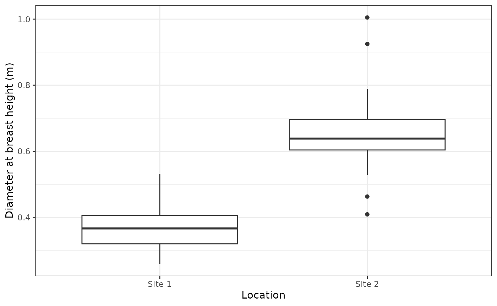
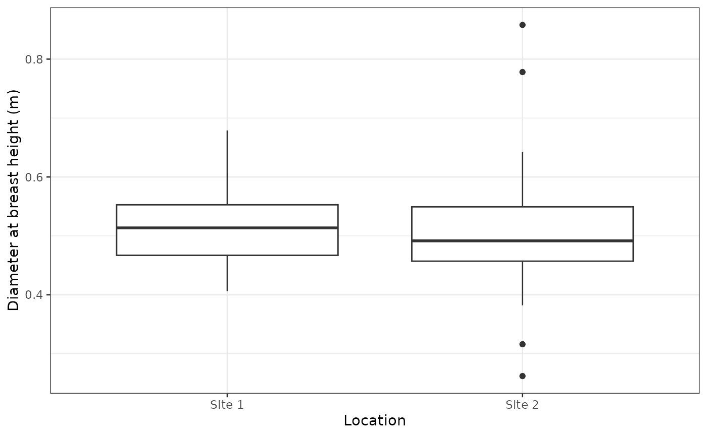
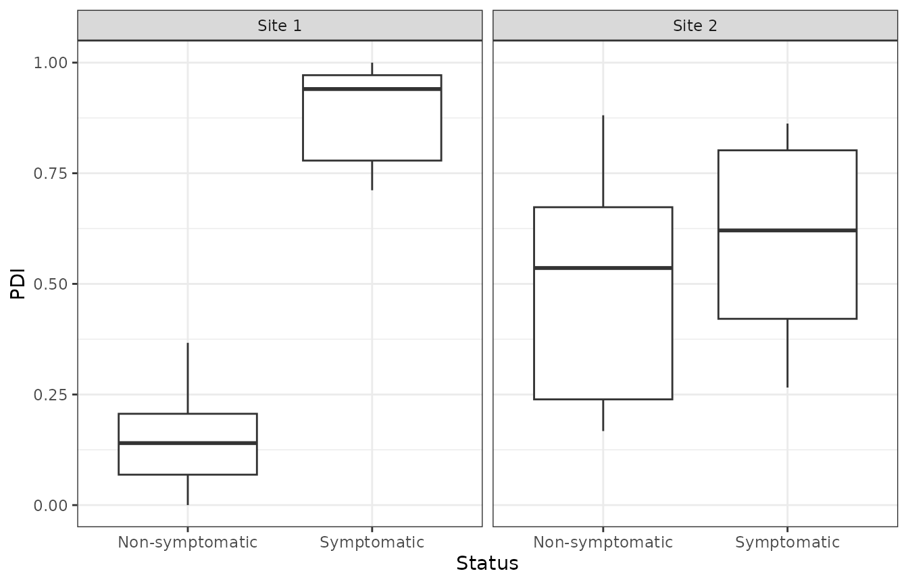
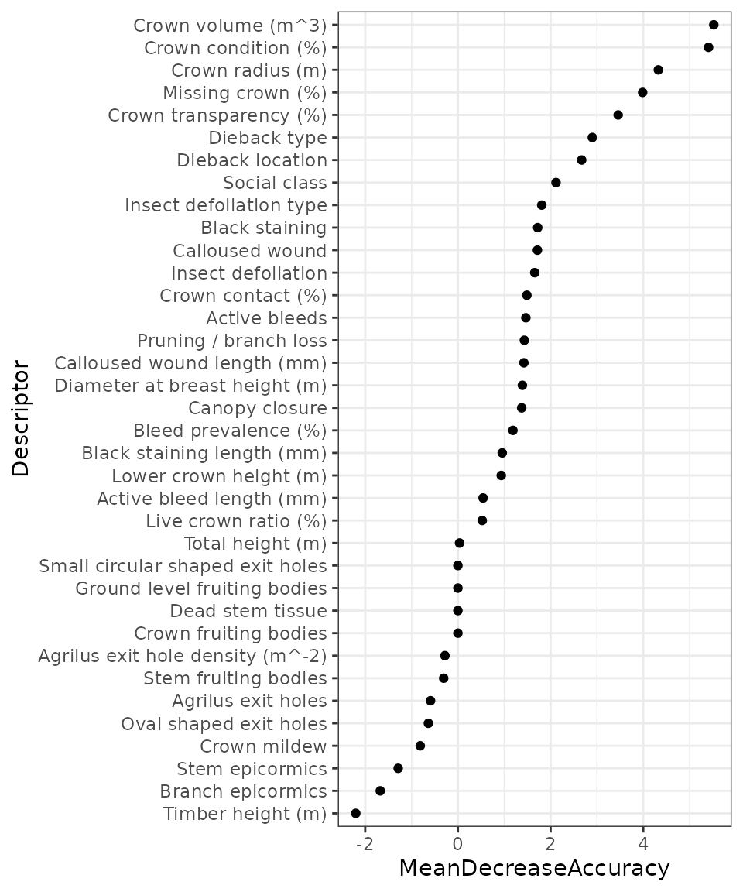
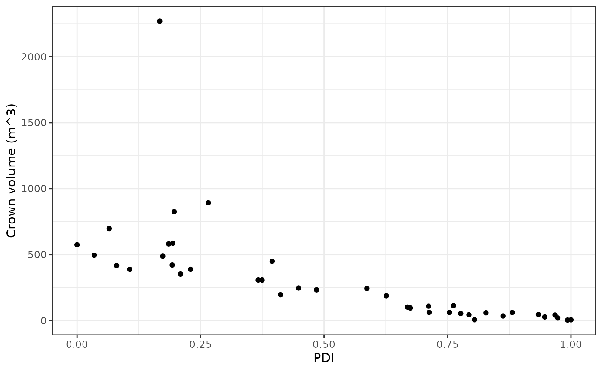

Generating phenotypic decline indexes using the pdi package
Jasen Finch
Source:vignettes/pdi-example.Rmd
pdi-example.RmdIntroduction
Oak declines are complex disease syndromes that consist of many visual indicators that include aspects of tree size, crown condition and trunk condition (Denman and Webber 2009; Denman et al. 2014). This can cause difficulty in the manual classification of symptomatic and non-symptomatic trees from what is in reality a broad spectrum of oak tree health condition.
Two oak decline indexes have been developed to quantitatively describe and differentiate oak decline syndromes in Quercus robur. These include:
Phenotypic Decline Index (PDI) - a measure of overall decline severity, scoring trees between 0 and 1. More severely declining oak trees having a score closer to 1.
Decline Acuteness Index (DAI) - a measure to differentiate between Chronic Oak Decline (COD) and Acute Oak Decline with a score between -1 and 1. Acutely declining trees having a score closer to 1 and chronically declining trees having a score closer to -1.
For more information on the methodology behind generating these decline indexes, see the article:
This vignette will provide an example framework of how to generate these decline indexes based on the machine learning algorithm random forest, using an example set of phenotypic descriptors.
To begin, load the package:
The following example example will also make use the dplyr package
for data manipulation, ggplot2 for visualisation and the pipe
(%>%) from the magrittr package. The additionally
required packages can be loaded using:
Example Data
For this example, we will be using phenotypic data provided within the package. This consists of data collected from two woodlands each with 20 oak trees surveyed. The trees were manually assigned an oak decline status with 10 decline symptomatic and 10 decline non-symptomatic trees at each site.
The file paths for the example data can be retrieved with the following:
files <- list.files(
system.file('phenotypeDataCollectionSheets',
package = 'pdi'),
full.names = TRUE) For collecting further data, a clean copy of the phenotyping data collection sheet template can be exported using:
phenotypingTemplate(path = '.')Index generation
Data preparation
There are several steps involved the initial preparation of the example phenotypic data collection sheets.
Firstly, the sheets can be parsed to give a list object containing the raw data for each site using:
d <- map(files,readPhenotypeSheet)These can then be assembled into a single tibble with the following:
As shown below, this provides a tibble containing 36 phenotypic descriptors for the 40 trees across the two sites.
print(p)
#> # A tibble: 40 × 36
#> Location ID `Agrilus exit holes` `Branch epicormics` `Crown contact (%)`
#> <chr> <dbl> <dbl> <chr> <dbl>
#> 1 Site 1 1 0 2 80
#> 2 Site 1 2 0 2 55
#> 3 Site 1 3 0 3 50
#> 4 Site 1 4 0 1 10
#> 5 Site 1 5 0 1 55
#> 6 Site 1 6 0 2 15
#> 7 Site 1 7 0 2 50
#> 8 Site 1 8 0 3 0
#> 9 Site 1 9 0 3 10
#> 10 Site 1 10 0 1 15
#> # ℹ 30 more rows
#> # ℹ 31 more variables: `Crown transparency (%)` <dbl>,
#> # `Crown fruiting bodies` <chr>, `Crown mildew` <chr>,
#> # `Diameter at breast height (m)` <dbl>, `Dieback location` <chr>,
#> # `Dieback type` <chr>, GPS <chr>, `Ground level fruiting bodies` <chr>,
#> # `Insect defoliation` <chr>, `Insect defoliation type` <chr>,
#> # `Lower crown height (m)` <dbl>, `Missing crown (%)` <dbl>, …Tree size descriptor adjustment
To account for potential differences in the age/size of tree between sites, an adjustment can be applied to standardised these descriptors to ensure that they are comparable between the sites.
The tree size descriptors in the example data set include:
- Diameter at breast height (m)
- Lower crown height (m)
- Timber height (m)
- Total height (m)
- Crown radius (m)
As can be seen in the plot below, there is a difference in the diameter at breast height between the sites; Site 2 having trees with greater diameter than Site 1.
ggplot(p,aes(x = Location,y = `Diameter at breast height (m)`)) +
geom_boxplot() +
theme_bw()
The adjustment to the tree size descriptors can be applied using the following. For each descriptor, this will adjust the site means to the overall mean, removing inter-site variance while maintaining intra-site variance.
sa <- siteAdjustment(p)The plot below shows the effect of the adjustment of the diameter at breast height with the difference between the sites removed.
ggplot(sa,aes(x = Location,y = `Diameter at breast height (m)`)) +
geom_boxplot() +
theme_bw()
The adjustment factors for each descriptor at each site can be returned using the following:
sa_factors <- siteAdjustmentFactors(p)
sa_factors
#> # A tibble: 10 × 4
#> Descriptor Location Mean Adjustment
#> <chr> <chr> <dbl> <dbl>
#> 1 Crown radius (m) Site 1 4.01 -0.887
#> 2 Crown radius (m) Site 2 5.78 0.887
#> 3 Diameter at breast height (m) Site 1 0.364 -0.147
#> 4 Diameter at breast height (m) Site 2 0.658 0.147
#> 5 Lower crown height (m) Site 1 11.0 1.47
#> 6 Lower crown height (m) Site 2 8.06 -1.47
#> 7 Timber height (m) Site 1 8.04 -2.14
#> 8 Timber height (m) Site 2 12.3 2.14
#> 9 Total height (m) Site 1 19.2 -0.805
#> 10 Total height (m) Site 2 20.8 0.805Additional descriptors calculation
Additional composite descriptors can be calculated to account for the three dimensional tree attributes and covariate nature of certain descriptors.
The additional descriptors provided by pdi include:
-
liveCrownRatio- Live crown ratio (%) -
crownCondition- Crown condition (%) -
crownVolume- Crown volume (m3) -
bleedPrevalence- Bleed prevalence (%) -
agrilusExitHoleDensity- Agrilus exit hole density (m-2)
These descriptors can be calculated for the example data using:
a <- sa %>%
mutate(`Live crown ratio (%)` = liveCrownRatio(`Total height (m)`,
`Lower crown height (m)`),
`Crown condition (%)` = crownCondition(`Missing crown (%)`,
`Crown transparency (%)`),
`Crown volume (m^3)` = crownVolume(`Crown radius (m)`,
`Total height (m)`,
`Lower crown height (m)`,
`Crown condition (%)`),
`Bleed prevalence (%)` = bleedPrevalence(`Active bleed length (mm)`,
`Active bleeds`,
`Black staining length (mm)`,
`Black staining`,
`Diameter at breast height (m)`),
`Agrilus exit hole density (m^-2)` = agrilusExitHoleDensity(`Agrilus exit holes`,
`Diameter at breast height (m)`)
)Random forest model fitting
Prior to index calculation, random forest models need to be fitted to the data, from which the indexes are calculated.
The data first needs to be prepared for random forest analysis:
t <- makeAnalysisTable(a)Then random forest can then be performed using:
m <- rf(t,cls = NULL,nreps = 10)Here we are using unsupervised analysis (cls = NULL) as
this data provides clear differentiation in decline status (see Index
calculation section). A supervised analysis could instead be used for
data sets where this distinction is not so clear and unsupervised
methods are not appropriate.
Index calculation
The following will calculate the decline indexes based on the proximity values calculated from the random forest models generated in the section above.
Here, only the PDI is calculated due to the low number of observations in the example data set. We have also chosen not to invert the calculated PDI index scale in this example. In other cases, inversion may be required to ensure the scale is orientated correctly.
The box plots of the calculated indexes are shown below. It can be seen that the decline statuses are clearly differentiated at Site 1 and less so at Site 2 with symptomatic trees having PDI values closer to 1.
ggplot(DIs,aes(x = Status,y = PDI)) +
geom_boxplot() +
theme_bw() +
facet_wrap(~Location)
Descriptor contributions
Now the decline indexes have been calculated, we next need to understand the relative contributions of the descriptors to the indexes. These can be calculated using the mean decrease in accuracy variable importance metric from the fitted random forest models. These importance scores can be retrieved using the following:
descriptor_contributions <- m %>%
descriptorContributions()The relative descriptor contributions can then be plotted using the following code, with the higher contributing descriptors at the top of the y-axis.
descriptor_contributions %>%
arrange(MeanDecreaseAccuracy) %>%
mutate(Descriptor = factor(Descriptor,levels = Descriptor)) %>%
ggplot(aes(x = MeanDecreaseAccuracy,y = Descriptor)) +
geom_point() +
theme_bw()
As can be seen in the plot above, the crown volume descriptor was ranked highest and therefore contributed most to the calculated decline indexes. The plot blow shows crown volume plotted against the calculated PDI values for each tree. It can be seen that the trees with lower PDI values (healthier) also have greater crown volumes which is what would be expected.
DIs %>%
bind_cols(a %>%
select(`Crown volume (m^3)`)) %>%
ggplot(aes(x = PDI,y = `Crown volume (m^3)`)) +
geom_point() +
theme_bw()
It is important at this stage to carefully assess the descriptor contributions to, and associations with, the calculated decline indexes to ensure they suitably describe the decline syndromes on which they are based. Where this has not been achieved, solutions could include using supervised random forest models instead of the unsupervised approach used here or the addition/removal of phenotypic descriptors from the models.